Mountain Rescue field operations
SAR Tracker Operator Manual
How to run a search in SAR Tracker: start the mission, follow your teams on the map, mark what you find, and close the mission safely. Written for volunteers, in the order you will need it.
Start here
Check these before you rely on the screen
| Look at | Good | If not |
|---|---|---|
| The tracking status in the top bar (click it for details) | Green Tracking OK. | A red strip under the top bar reading TRACKING LOST means the dots on the map are the last positions received, not live ones. Amber words such as 2 stale or Re-enter password name a problem: click the status and follow what the Tracking panel says. |
| The mission button (top left) | Mission · Running. | Mission · PAUSED, with a red MISSION PAUSED strip: the search clock is stopped and positions are not updating. Open the mission button and press Resume when searching restarts. Needs resuming means the app restarted mid-mission: resume it before relying on the map. |
| Stale positions | Tracking OK with nothing else after it. | A device that has not reported for more than five minutes is counted, for example 2 stale. Treat its dot as old. When there is not room for every warning, the status shrinks them to +2 more or just 3 problems, so a missing stale count does not prove positions are fresh: click the status and read the full list in the Tracking panel. |
| The Maps menu | The map you expect. Use Check View before relying on offline maps. | A public fallback map does not work offline in the desktop app. See Official and offline maps. |
| An amber Browser testing mode banner | Not shown on the desktop app. | You are in a test copy that keeps data in the browser session. Do not use it for a real incident. |
The 6-step start
- Open SAR Tracker. Confirm the tracking status in the top bar reads Tracking OK. If it says Tracking not connected, click it: the Tracking panel says why (for example, no tracking server is set up yet) and what to do. Usually that means Settings first.
- Type a Mission name your coordinators will recognise later.
- If the search began before you opened the app, set Roll back time (hours) (up to 48).
- Tick the groups and devices taking part before you press Start.
- Press Start.
- Check the mission button reads Mission · Running and your teams are on the map.
The full detail is in Run a mission.
A typical mission, the way the team runs it
These are the team's own steps (SAR-QA-025), with what each one looks like in SAR Tracker. Most settings are set once in Settings and then left alone.
- Start the PC and open the AppImage from the desktop. On PCLinuxOS this is the SAR Tracker AppImage file.
- Enter the mission name.
- Set the roll back time: Roll back time (hours), up to 48, if people were out before you opened the app.
- Start. Your team's own group (for example KMRT) is already ticked, marked team default, if it was chosen once in Settings → Tracking sources. Its members' tracks are fetched back to the roll back time.
- Discovery map. SAR Tracker opens on the map you last chose, so Discovery Topo comes back by itself if its package is ready.
- From here the mission develops: convert coordinates (Convert, bottom right), add the casualty location (a Casualty marker), and watch where people are.
- Switch maps when you need to: OpenTopoMap and ESRI Satellite are in Maps (they need internet).
- Full screen: after Start the map is already clear; press F11 on Linux. Press People or Show panel in the top bar when you want the list of people. A problem never waits for that: it shows in the top bar and the red alarm bar.
Add another team after Start with the Mission button (top left) → Change who's taking part, and choose Show their positions from: Mission start to bring in their earlier track.
The main screen
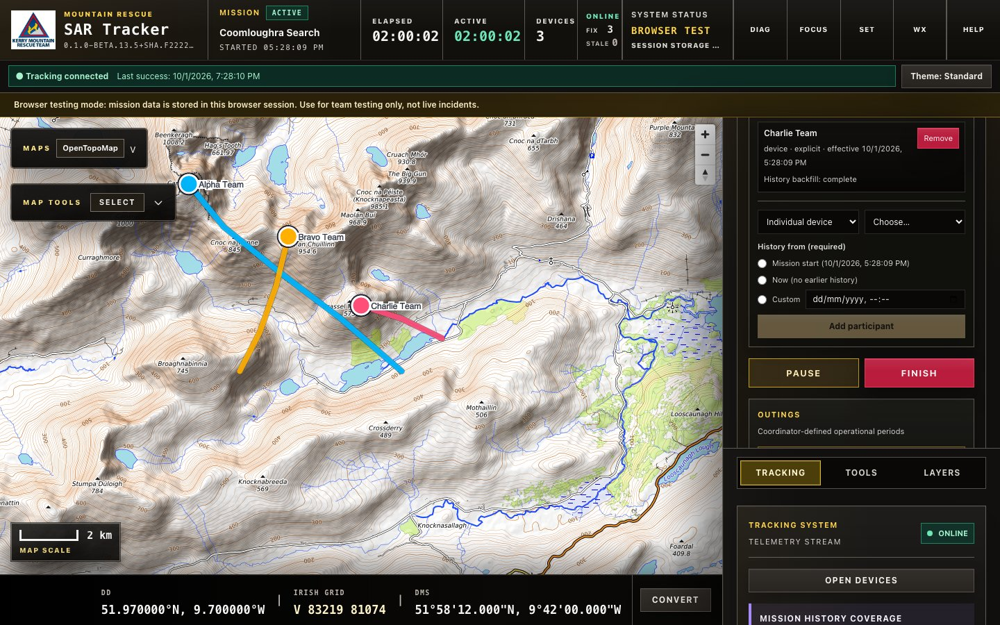
| Part | What it shows |
|---|---|
| Top bar | From the left: the Mission button (name and state: Start a mission, Running, PAUSED or Needs resuming; press it to pause, finish or add people) with the search clock; the tracking line, which says in plain words whether positions are arriving and when the last one did (press it for what to do). When something is wrong it starts with a short word for each problem, most urgent first: people (out of date, not moving, rejected reports) before connection, mission record, history and cache problems, for example 2 stale · 1 rejected · History failed; if they do not all fit it ends +2 more. Press it for the full words; People, Layers and Full map; then Weather, Settings and More (Review and replay, Diagnostics, Help, Theme). On narrower screens the team logo is hidden to leave room for the tracking line. |
| Alarm bar | A flashing red bar across the top of the map when the map cannot be trusted: tracking lost, the mission paused, or the mission record failing. It stays until the cause is fixed. What to do opens the Tracking panel. If Settings, Diagnostics or All devices is open, it closes that first; Settings asks before losing unsaved changes, and Keep editing leaves it open. |
| Map | Top left: Maps (which map) and Map Tools (draw, measure). Map Tools stops above the map scale and the coordinate bar and scrolls inside on a small screen. Bottom: scale, and the position under the cursor in DD, Irish Grid and DMS, with a Convert button. |
| Side panel | One panel at a time, on the right: People (who is out, who needs a look), Layers, Tracking (opened from the tracking line) or Mission (opened from the Mission button). Close or Full map gives the map the whole width. With People closed, anyone who needs a look is listed over the map. Before Start, while a mission waits to be resumed and after Finish, Layers (with GPX and helicopters) and Tracking still open; People is greyed out until a mission is running. |
Run a mission
Start a mission
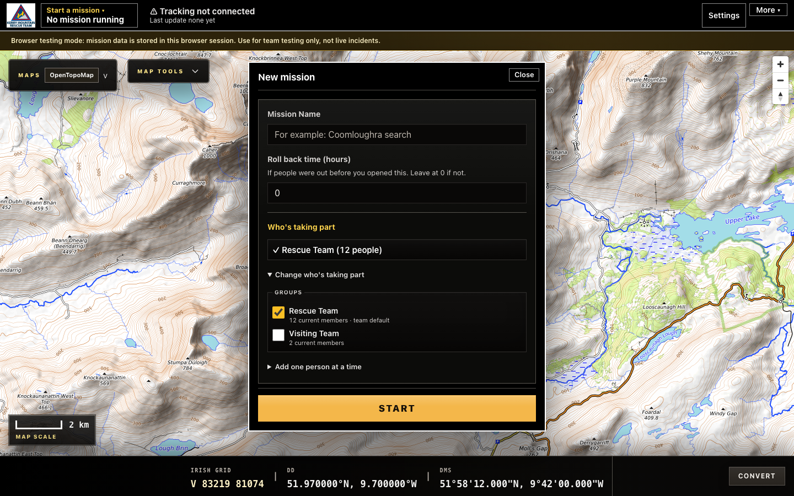
- Mission name: required. Use plain words, for example the place and date.
- Roll back time (hours): backdates the start when the search began before you opened the app. Maximum 48 hours.
- Who's taking part: your team default group shows already ticked. To change it, open Change who's taking part and tick the groups that are part of this search; Add one person at a time ticks single devices. A group covers everyone in it; their own boxes are locked and say included by selected group. Each time this step opens, SAR Tracker re-reads the groups from Traccar, so a group created since you started the app appears without a restart. While it reads you see Refreshing Traccar groups…. If the read fails, a message with a Retry button appears and the groups already listed stay as they were. Refreshing never ticks anyone for you.
Team default group. In Settings → Tracking sources → Team default group, choose your team's own Traccar group (for example KMRT). It is then ticked automatically in the Start step of every new mission, marked team default, so its members' history is fetched from the roll back time. Untick it if your team is not taking part; SAR Tracker will not tick it again for that mission. Nothing else is ever selected automatically. If the group is no longer on the tracking server, the Start step says so and nothing is ticked.
When you press Start, the mission button reads Mission · Running and the Search time clock in the top bar runs. It is the only mission clock on screen; the Mission panel no longer repeats it, and the mission record still keeps the total time since the (possibly backdated) start.
Add or remove a team during the mission
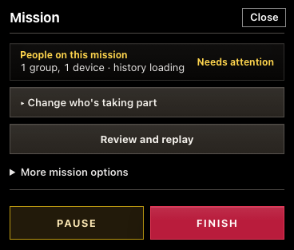
During a mission, People on this mission is one line, such as 1 group, 1 device · history complete. Press Change who's taking part to add or remove someone; press it again to fold it. Anything that needs you is shown in words above that button and is never folded away, and the line is marked Needs attention: nobody selected, earlier positions still loading or failing, an older roster to resolve, a change in a group's members to read, or an error. That includes earlier positions for a team you have removed, because Finish still waits for them. The Mission button in the top bar shows ⚠ Needs attention on its first line. Folding never discards what you were typing.
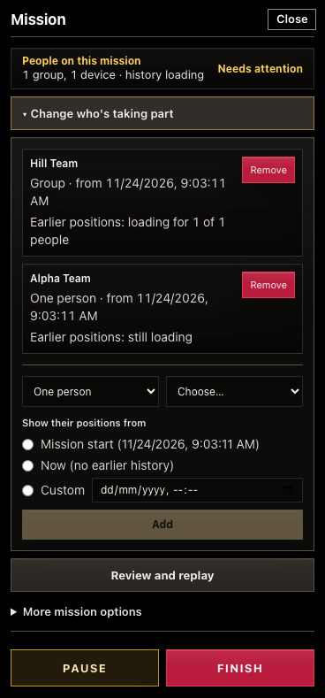
- Press Change who's taking part, choose One person or A group, then pick one from the list. Choosing A group re-reads the groups from Traccar first, so a newly created group is listed (a failed read shows a message and Retry; nothing is added until you press Add).
- Choose Show their positions from. There is no default, and Add stays greyed out until you choose:
- Mission start: brings in their track back to the mission start.
- Now: records only from this moment.
- Custom: from a time you enter.
- Press Add.
Choose carefully: Mission start could count a late joiner's earlier travel as part of this mission. To take someone out, press Change who's taking part, then Remove on their row. That stops collecting from now on; what is already saved stays saved.
Earlier positions: still loading means the earlier track is still being fetched from the tracking server. You cannot finish the mission until it completes. If it stays loading, click the tracking status in the top bar. If it fails, the Mission panel says so in words, for example Earlier positions for Hill Team could not be loaded.
Unknown roster from an older version. If a group was selected in an older version and its original members are not known, waiting or reconnecting will not help. Use Resolve legacy roster on that participant: enter your name and the reason or records you checked, then either supply the historical device IDs or confirm the original group was empty, and confirm the time span shown. The original record is never changed; your decision is audited separately and cannot be overwritten. Devices you supply must have their history completed before Finish.
If someone joins or leaves a selected group on the tracking server, an amber notice appears (for example 2 joined Hill Team) saying no earlier evidence was invented. Read it, then press Got it.
Outings
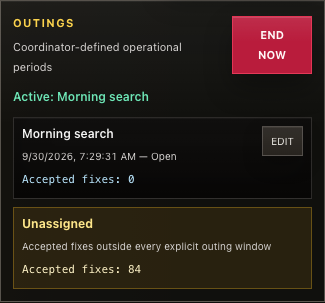
An outing is a period you name and control, such as Morning search. The app never starts or ends one for you.
- During a mission open More mission options at the bottom of the Mission panel, then Show on Outings. Type a name and press Start outing. Press End now when the period ends. Edit changes the boundaries; it never changes recorded positions.
- Outings can cross midnight but cannot overlap.
- With no outing running, new positions are kept as Unassigned. That is normal and not an error.
- Pausing the mission does not end the outing.
- Finishing the mission does not end an open outing either. After Finish, open More mission options in the Mission panel: the outing is listed as Open.
Pause and resume
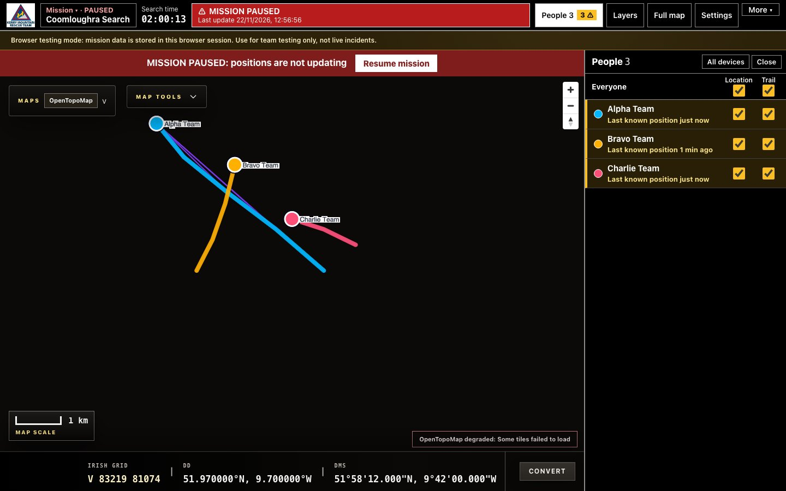
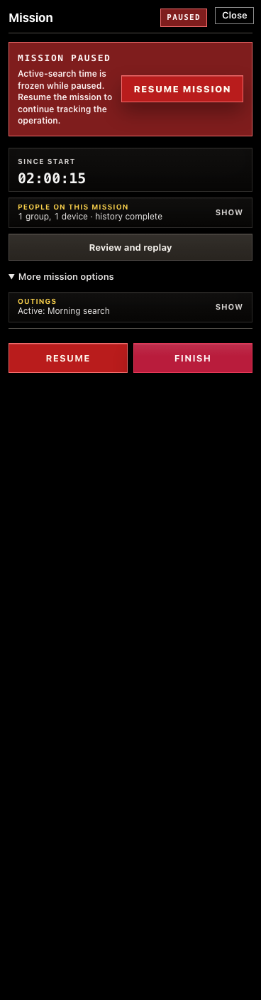
Pause stops the Search time clock. While paused, live position refresh is suspended, so the map does not update. Press Resume to carry on. While paused, each person reads Last known position (or No position yet). The amber number on the People button counts only people with a problem of their own, such as someone already out of date or reported offline before the pause, or with no position yet; the red strip covers everyone else.
Finish
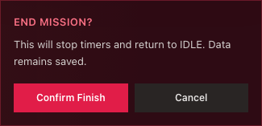
- Press Finish, then Confirm Finish (or Cancel).
- While the Finish question is showing, Settings, Diagnostics and All devices do not open over it; the question says so. Answer it first. If Review is open beside the map, it stays open and fills the screen once Finish is done.
- If an outing is still open, the dialog says so and offers End outing now. Finishing does not invent an end time for it.
- The mission returns to IDLE and a Mission Governance card appears so you can archive and lock it.
If the app restarts or crashes
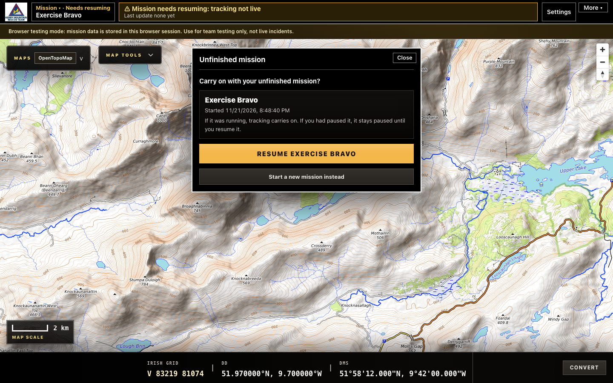
- The top bar says Needs resuming and names the mission, and the tracking line says tracking is not live until you choose.
- Resume keeps the same mission. A mission that was running carries on; one you had paused stays paused until you press Resume on the mission panel.
- The gap between the interruption and your choice counts as paused time, and Review records it as an automatic pause after an unexpected shutdown.
- Start a new mission instead asks first: Finish it, start new finishes the unfinished mission (its record is kept and can still be reviewed) and opens the new-mission screen. Go back changes nothing. Use it only if the unfinished mission is not the current incident.
- Keep one mission open across a multi-day search, even if the app or computer is closed overnight. Finish only at stand-down. Do not start a new mission each day to save space.
- If only the map window crashes (for example it runs out of memory), SAR Tracker reopens it by itself and shows SAR Tracker map window reopened. Press OK, resume the mission if asked, and check that tracking is live and team positions are updating. If the window crashes again and again, SAR Tracker says map window keeps crashing and closes; start it again and resume.
- After a serious fault SAR Tracker says the app will relaunch. If it has not reopened within a minute, start it again yourself and resume.
- If closing takes a long time, SAR Tracker asks SAR Tracker is not responding. Wait gives the map window more time to save the latest track points. Close now closes anyway (during a reload the button reads Reload now); any track points not yet saved for the active mission are shown as possibly missing. If even that question cannot be shown, SAR Tracker shows an error and keeps waiting; force quit only if it stays stuck.
Make more room, or make it easier to read
- Full map (top bar) closes the side panel so the map fills the window. Show panel brings People back. The app remembers your choice if it is closed or restarts. Warnings stay in the top bar and the alarm bar.
- Close on any panel does the same for that panel. Your layer choices are kept.
- SAR Tracker opens in the light theme by default: light grey panels with dark writing and strong borders, easy to read in daylight.
- At night, switch to the dark theme: top bar → More → Theme: Light. The button changes to Theme: Dark and the panels turn black. Press it again to go back to light.
- The button always shows the theme in use. Your choice is remembered on this computer and is used from the moment SAR Tracker opens. If you had chosen High contrast before, you get the light theme. If you had chosen the dark theme, or turned High contrast on and off again, you keep the dark theme.
- The theme changes the panels, the top bar, menus and dialogs, not the map. Warnings keep their colours in both themes: MISSION PAUSED and TRACKING LOST stay solid red with white writing, and a person needing attention is still marked in amber.
- If the theme cannot be saved, SAR Tracker still switches and says Theme applied; could not save for next launch.
- If SAR Tracker cannot read the saved choice when it opens, it opens in the light theme, and the theme button under More says Could not read the saved theme at startup, so SAR Tracker opened in Light. Choosing a theme again saves it and clears the message.
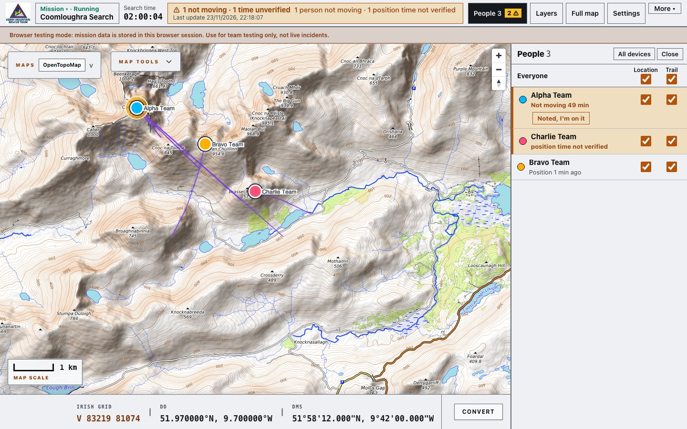
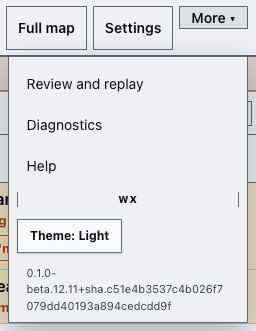
Tracking and devices
SAR Tracker asks the Traccar server for positions about every 30 seconds (the interval is in Settings). If the server cannot be reached it keeps the last positions it had and marks them, rather than clearing the map.
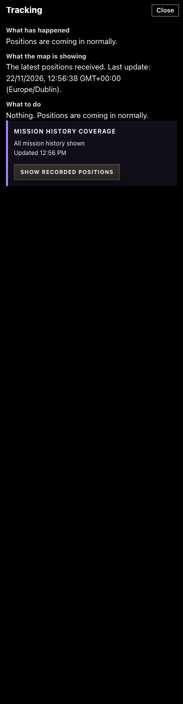
What the tracking status and alarm are telling you
The tracking status in the top bar is one line that says whether the map can be trusted. Click it for the Tracking panel, which says what has happened, what the map is showing and what to do. When tracking is lost or the mission is paused, a red alarm strip also runs across the top of the map. When there is not room for every warning, the status shrinks the rest to +2 more (or +2, or just 3 problems); click it to read them all.
| You see | It means | What to do |
|---|---|---|
| Green Tracking OK | Positions are arriving. | Nothing. Still glance at Last update under it. |
| Red TRACKING LOST in the status, and a red strip across the map: TRACKING LOST: positions on the map may not be current | New positions have stopped arriving. The map shows the last positions received; they may not be where people are now. | Treat every dot as old and use your independent source. Check this computer's internet connection, then press Reconnect in the Tracking panel. |
| Red MISSION PAUSED in the status and the mission button, and a red strip: MISSION PAUSED: positions are not updating | You paused the mission. No new positions are being fetched and the search clock is stopped. | Press Resume mission in the red strip when searching restarts. |
| Red MAP NOT UPDATING in the status, and a red strip across the map: MAP NOT UPDATING: positions drawn on the map may be out of date | Positions are still arriving, but the map could not draw the latest ones, so the dots and trails on the map are from before it stopped updating. | Do not rely on dots or trails on the map until the strip clears. Use People for when each person was last heard. The app redraws with each new position; if the strip does not clear, open More, then Diagnostics, and send the support bundle. |
| Re-enter password: amber before a mission; red with TRACKING LOST (or MISSION PAUSED) and the alarm during one. On a narrow screen the top bar first leaves out TRACKING LOST (the alarm across the map still says it). Stale or not-moving people come before the fix: a person who has stopped moving may need a radio check. When there is not room for both, Re-enter password is counted as +1 more (or +1). Click the line to see every problem and the fix | The saved tracking password or token cannot be used on this computer, so tracking cannot connect. Any positions already on the map are the last ones received and may not be where people are now. | Click the line, then Open Settings: Tracking sources. Enter the password or token again and press Save, Connect & Close. If the mission is paused, press Resume mission afterwards. |
| Grey Tracking not connected | Tracking is not connected, for example because no tracking server is set up yet. The Tracking panel says why. | Click it and follow What to do: usually open Settings, connect Traccar, then Reconnect. |
| Amber Mission needs resuming | The app restarted in the middle of a mission and tracking is not live. | Choose Resume if this is the same incident. |
| Red alarm MISSION RECORD NOT FULLY SAVED: positions are live, but open this before finishing | Part of the mission record could not be saved. Positions are still updating. | Keep the app open and carry on. Do not finish the mission yet. Open More, then Diagnostics, and send the support bundle. |
| Amber 1 time unverified | The tracker sent a position without a trustworthy fix time. It is shown for safety but is not used as exact trail evidence. | Use the position with care and note the device. Ask an admin to look if it keeps happening. |
| Amber 2 stale | Two devices have not reported for more than five minutes. | Call the teams. Do not assume the dots are where they are. |
| Amber FIX TIME AHEAD OF THIS LAPTOP; device shows Position time ahead of laptop clock | A fix time is more than two minutes later than this laptop's clock. Either the laptop clock is behind or the tracker sends the wrong time zone. The device counts as stale until its fixes are back in step. | Check the laptop's date and time. If only one device is affected, call the team and ask an admin to check that tracker's time setting. Do not treat its dot as live. |
| Red TRACKING LOST, with LIVE REFRESH SUSPENDED — new positions are not being saved to the mission record in the Tracking panel | The app is waiting for the mission record to accept positions it already has. Until it does, it fetches no new ones, and the dots go stale on schedule. | Treat every position as old and call teams for their locations. If it does not clear within a few minutes, save your work, restart the app and tell an admin. |
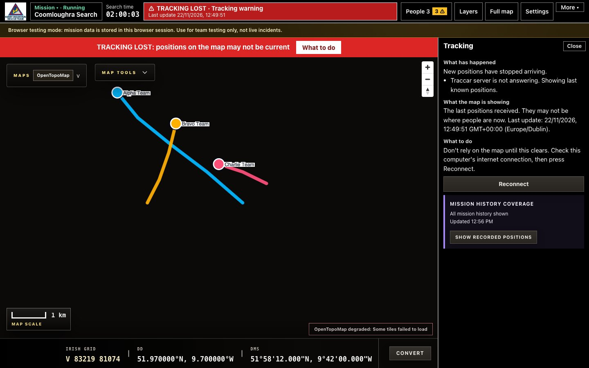
Other amber or red warnings you may meet in the Tracking panel, and what they mean:
| Warning | Meaning |
|---|---|
| MISSION BREADCRUMB STORAGE FAILED | Positions may still be live, but saved history might not survive a restart. Export a support bundle before restarting if it is safe to. |
| TRACKING FALLBACK CACHE UPDATE FAILED | The saved mission is still correct, but the last-known view after a restart may be out of date. |
| BREADCRUMB EVIDENCE WARNING | Some rows in a history reply were rejected. Valid fixes carry on; the rejected rows are kept out of the trail. |
| POSITION SOURCE CONFLICT | The tracking server sent a different position for a fix it had already sent. SAR Tracker keeps the first accepted fix as the one shown, and keeps the conflicting one in the mission record. A later reading from the server may therefore disagree with the map; check with the team. |
| EVIDENCE HEALTH (amber or red) | Rejected-position or other evidence is waiting to be saved, or could not be saved. Live positions still show. The warning stays until the evidence is saved or the storage problem is fixed; read its words and export a support bundle if it does not clear. |
| TRACKING REPLACEMENT EVIDENCE UNSETTLED | An earlier connection has not finished saving its evidence. Keep the app open, check Diagnostics, and try Reconnect. It is not confirmed data loss, but do not ignore it because new positions are arriving. |
| Breadcrumb history is reconciling | Catching up on older history. Current positions stay live. |
| Breadcrumb history re-check is running behind for a named device, with times | The app re-reads older history every five minutes to pick up positions a phone uploaded late. For the named device and times that re-read has been behind for at least ten minutes, so late-uploaded positions from then may not be on the map yet. It continues by itself and the warning clears when it has caught up; while the mission is paused it continues when live tracking resumes. |
| Breadcrumb history incomplete for a named device, with times (for example 10:05–10:35) | That stretch of the device's trail could not be loaded from the tracking server and is missing from the map. The app keeps retrying about every five minutes and the warning clears when the stretch is filled. Until then do not read that gap as "nobody was there"; check with the team. The warning stays on screen while the mission is paused or the app is offline; while paused it ends retries resume when live tracking resumes, because nothing is retried until then. If the clocks change inside the missing stretch, each time shows its offset (for example 01:50 (UTC+1)–01:10 (UTC+0)). |
| DEVICE ROSTER INCOMPLETE | The tracking server sent one or more device entries the app could not read, so a tracker may be missing from the map. Count your trackers against the list, and check the device list in Traccar. The warning stays up, including while the list is refreshing, the mission is paused or the app is offline, until the server sends a complete list. |
| PARTICIPANT HISTORY UNAVAILABLE | The app has no saved record for the named device in this mission (for example it was removed before it first reported), so its earlier history cannot be downloaded and Finish stays blocked. Other devices carry on. Add the device as a participant again while it is reporting; its history then downloads and the warning clears. If the device is not coming back, tell your technical lead. |
| MISSION STORAGE REFUSED FIXES | Some fixes arrived with a missing or invalid value (for example no time) and were not saved or drawn. All other fixes were saved. The number is the total for this mission and stays on screen. Tell an admin and export a support bundle after the mission. |
| TRACKING SERVER REUSED POSITION IDS | The tracking server sent a different fix under an id it had already used. The fix stored first was kept and the new one is not on the map. The server may have been reset or restored; check with whoever runs it, and check positions against your independent source. |
If a map overlay (for example markers) fails to redraw, a persistent warning on the map names it while the app retries. Check against your independent source and export a support report if it stays.
All devices
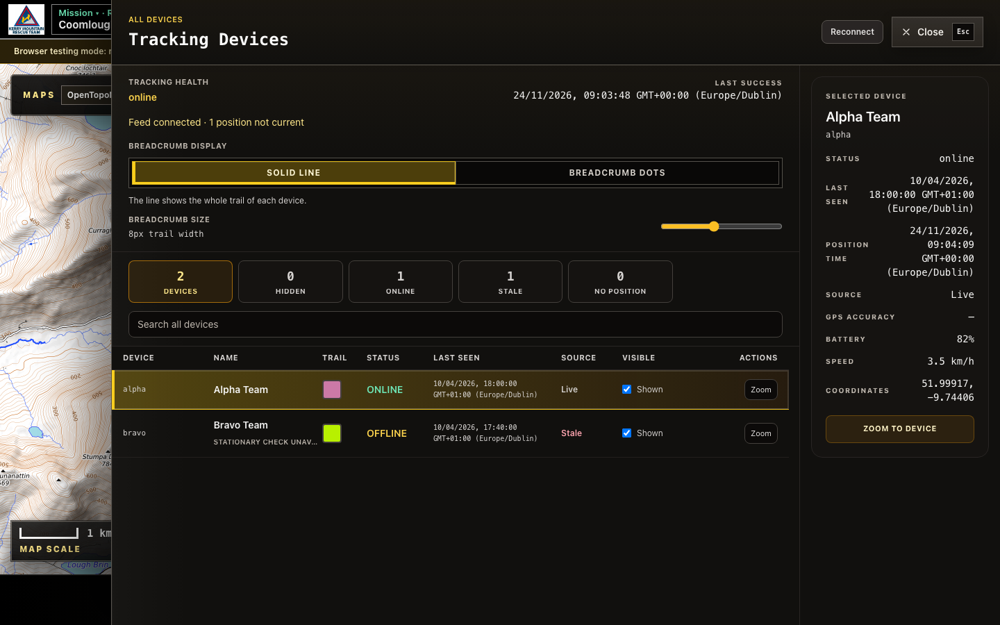
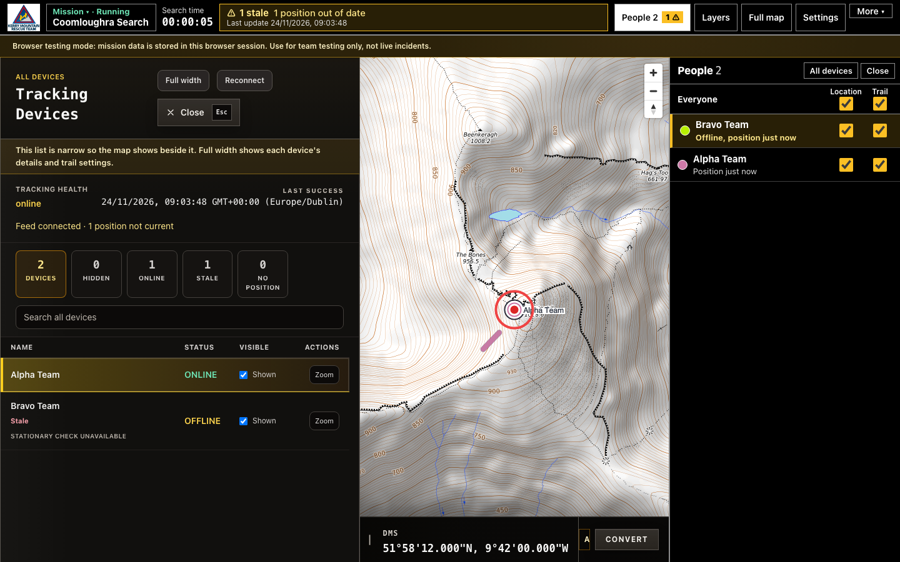
- Filters along the top: Devices, Hidden, Online, Stale, No position. The search box searches inside the chosen filter.
- Trail colour: click a swatch to pick a colour for that device's dot and trail.
- Visible: untick Shown to hide a device's dot without removing it from the mission.
- Zoom jumps the map to the device (not available if it has no position) and narrows the list to a strip on the left, as Review does. The map, its coordinate readouts and Map Tools move over beside the list, so nothing is hidden under it, and the device is placed in the middle of the map. On a small screen the list narrows further so the map keeps a usable width, Map Tools moves under Maps, and the readouts wrap onto two rows rather than being cut short. Your filter and search stay as they were. In the narrow list a position that is not live, or missing, says so under the name, for example Stale, Saved earlier, Last known or No position. Press Full width to widen it again.
- The selected device panel shows status, Last seen, Position time, source, GPS accuracy, battery, speed and coordinates. Times are local, with the time zone and UTC offset.
- Reconnect reloads settings and reconnects to the tracking server. Until a device sends a fresh fix it shows Unknown / Last known, not Online.
- A position that is not current (older than 5 minutes, with a fix time ahead of this laptop's clock, or from an expired cache) always shows Stale in red in the Source column, also when its time is not verified or tracking is offline (for example Stale · Position time not confirmed or Stale · Last known). Its status is then not shown in green, because the device is not reporting a current position.
- The line under Tracking health is green (Tracking feed healthy.) only when tracking is online, nothing is wrong, and every position is current. When positions are not current it reads amber, for example Feed connected · 2 positions not current; when tracking is also offline or not connected it says so first, for example Tracking offline · 2 positions not current.
Who is tracked, saved and shown is decided only by People on this mission in the Mission panel. All devices does not change it.
Breadcrumbs: line or dots
- Solid line draws each trail as a line. On very long routes the line may be simplified for speed; the app then shows Trail display simplified and how far the line may differ. The saved history is not simplified.
- Breadcrumb dots keeps the line, so the whole trail stays on the map while trails are switched on, and marks real recorded fixes as dots on top of it. Up to 10,000 fixes are marked at a time, counted across every device. The Tracking panel says how many are marked out of how many, and for which times; Earlier and Later move the dots to other times. The dots never use samples in place of real fixes. If the dots cannot load, the Tracking panel says so in red and the line still shows the whole trail.
- If you hide a person's trail in the Layers panel, their line and dots are not drawn, but their fixes are still counted in the dots numbers; the Tracking panel says how many trails are hidden. If you switch Trails off in the Layers panel, no line or dots are drawn at all, and the Tracking panel says so. Before any fix has arrived, the Tracking panel says no trail line is on the map yet.
- A fix that stands on its own (a device's only fix, or one fix between two silences of more than 30 minutes) is drawn as a small circle in the device's colour, because a line needs two places.
- Breadcrumb size changes line width and dot size for all devices.
To hide only a current-position dot or only a trail, use the Layers panel.
Stationary attention
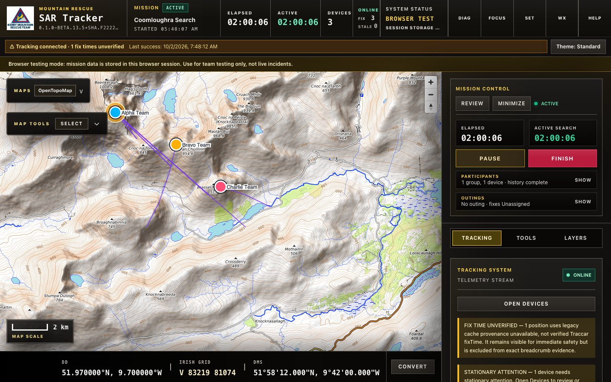
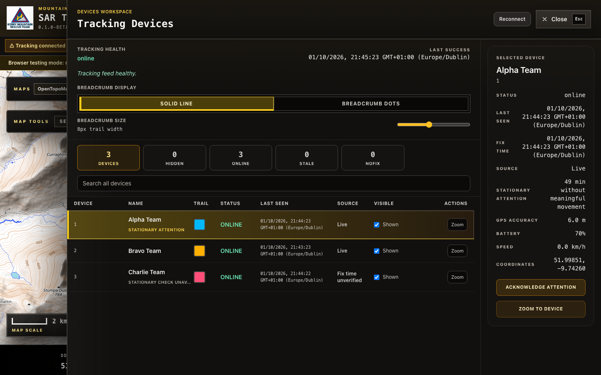
An amber ring means a device has not moved meaningfully for a while. The defaults are 20 minutes and 15 metres (changeable in Settings under Mission defaults). It is a prompt to check on them, not an emergency declaration. Acknowledge attention dims the ring but changes no data. Real movement clears it. A new stationary spell needs a new acknowledgement.
Mission history coverage
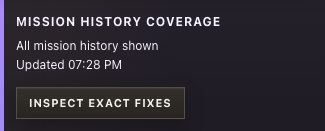
The thin violet lines on the map are the saved history of the people you have ticked. This panel tells you whether that history is complete. It never delays or hides live positions. It will not claim "all shown" unless the saved record backs it up.
| Message | What to do |
|---|---|
| All mission history shown | Complete for every selected participant and outing. |
| All selected history shown | Complete for what is ticked, but you have left some people or outings out (see Layers below). |
| Participant history is still being added | Wait. Live positions are unaffected. Finish stays refused until it completes. |
| Updating — the newest positions are being added to the history line | Normal while people are moving. The earlier line is drawn; the count shows how many fixes are drawn so far. Nothing to do. |
| History incomplete — showing loaded coverage | The line is missing fixes and is not catching up on its own (stopped, failed, or no update for over 2 minutes). What is drawn is real but not the whole record. Press Retry. Do not treat it as the full history. If it says it is retrying automatically, it will keep trying. |
| Reason: the history builder ran out of memory | This mission's history is too large for the part of the app that builds the whole-history line, so that line may stay missing. Saved positions are safe and current positions stay live. Use Inspect exact fixes to check saved positions, and report it. |
| Loaded history is shown, but completeness is not yet verified | Everything may have loaded, but the final check has not passed. Press Retry. |
Progress can go backwards (for example 0 of 0 briefly after a restart). A lower number is safer than a false 100%.
If mission history fails, stalls or is incomplete while the Tracking panel is not on screen (the workspace is hidden, or another tab is open), an amber MISSION HISTORY warning appears in the strip under the top bar. Press it to show the workspace and open Tracking. A History line stalled message means the line has not changed for over 2 minutes and may be missing recent positions or be out of date; current positions stay live. Press Retry.
Under heavy tracking a check can lose the race with new positions and is retried every 30 seconds; that is normal. If the history still has not been verified after about five minutes, a Coverage overlay may be missing or stale warning appears on the map. It clears by itself once the history is verified. Until then, treat the violet lines as possibly incomplete, check against your independent source, and export a support report if it stays.
New saved fixes make completeness unverified until the next check. Background checks pause for 30 seconds after the previous check finishes; Retry checks immediately. The loaded history stays visible and live position markers keep updating. If the history display fails, new live fixes do not clear its error. The app tries one prompt display recovery; use Retry if the error remains.
Tracks uploaded late. When a phone regains signal, or the tracking server comes back, it uploads its buffered track with the original fix times. Every five minutes SAR Tracker re-reads the last six hours of every participant, so a buffered stretch from that period appears on the map within about five minutes. Older history is re-read newest first, about every 35 minutes on a 48-hour mission.
- Inspect exact fixes switches to Breadcrumb dots: the line stays and real fixes are marked on top of it, a page at a time (see above).
- In Layers, the Mission History checkboxes can leave out a person, a named outing, or Outside outings (fixes that fall in no outing). This only changes what is drawn; it deletes and changes nothing, and it does not hide anyone's live marker.
- Devices that were never picked as participants stay out of mission evidence and the mission map.
Map and grid references
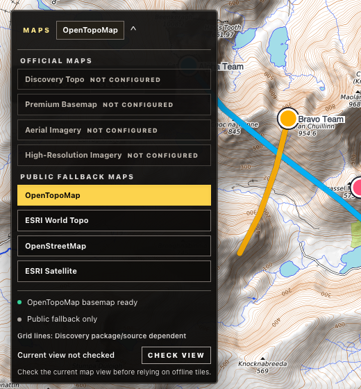
- Maps lists Official Maps (Discovery Topo, Premium Basemap, Aerial Imagery, High-Resolution Imagery) and Public Fallback Maps (OpenTopoMap, ESRI World Topo, OpenStreetMap, ESRI Satellite). Official maps need the desktop app and a licensed package.
- If a map cannot be applied, the Choose another basemap warning stays visible even if tile requests also fail. Choose a map from Maps to recover; selecting the same map retries it.
- The map name shows below the list, with a health line. Public fallback only means it needs internet.
- Check View tests whether the map you are looking at can be drawn from local files. Run it after you pan or zoom.
Coordinates
The strip at the bottom shows the position under the cursor as DD (latitude/longitude), Irish Grid (TM65) and DMS. Outside Ireland the grid field says Outside Ireland rather than inventing a reference. The Map scale bar at the bottom left is split into black and white blocks, like the scale on an OS map. The numbers under it mark round distances from 0, for example 0 · 250 · 500 m, or 0 · 1 · 2 km when zoomed out. It measures ground distance at the centre of the map and gets shorter when the map is narrow, for example beside a docked panel. On a very short bar only the two end numbers show. If the app cannot work out the scale it says Map scale unavailable instead of drawing a bar: measure with the Measure tool until it comes back. Map warnings sit above the scale and any GPX notice, never over them, and Map Tools stops above the warnings and any GPX notice, so each stays readable and usable. On a very small map, Map Tools always keeps its title and a list you can scroll; if a long warning list reaches it, open Map Tools is drawn over the warnings so its buttons keep working; close Map Tools to read them. The warning list stops below the team names shown on the map and scrolls.
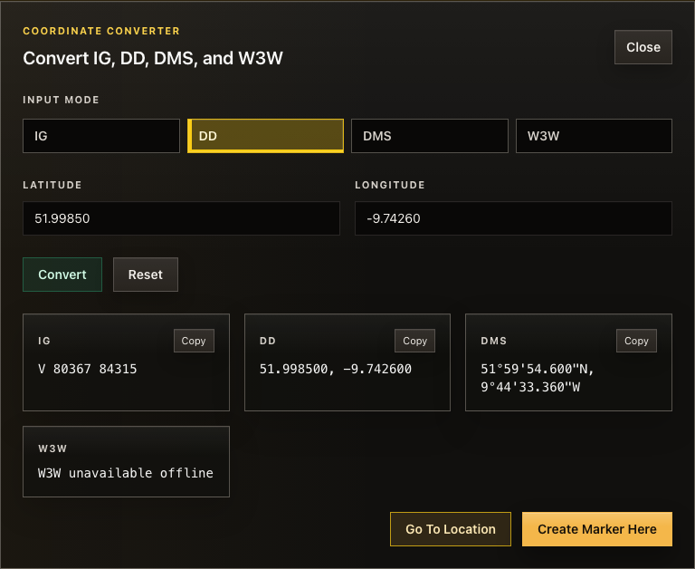
- Choose the input type: IG, DD or DMS. (W3W is not available offline.)
- Type the coordinates and press Convert. Copy any result with Copy.
- Go To Location moves the map there (a red ring marks it briefly). Create Marker Here opens the marker form at that point.
- If you change the coordinates or the input type after converting, the result and both buttons disappear. Press Convert again, so a marker is never placed at the old position.
- Short grid references work:
V 80 84means the centre of that grid square. - Decimal degrees use a full stop for the decimal point. Commas are only allowed between latitude and longitude.
- A point far out at sea, or a contradictory input such as a negative value tagged E, is refused with a message instead of being guessed.
- Bearings: magnetic declination for Ireland is taken as 4.5° west. True to magnetic subtract 4.5°; magnetic to true add 4.5°.
Official and offline maps
One-time setup (desktop app)
- Get the team's USB drive or folder with the MapGenie source file and the prepared
.mbtilesmap package. - Open Settings → Mapping.
- Press Choose MapGenie File and pick the source file.
- Press Add Discovery Package and pick the
.mbtilesfile. The app copies it into its own storage, so you can remove the USB afterwards. - Press Save Settings and wait for the package to be checked.
- In Maps, choose Discovery Topo.
Raw Discovery files (.zip, .tif) are not accepted. An admin must prepare
an .mbtiles package first. Packages are labelled Standard (under 2 GB,
the Kerry/West area, recommended), Mission Area (2–4 GB) or National
(over 4 GB, prepared in advance, never during a mission).
SAR Tracker remembers the map you chose. On the next start it opens on OpenTopoMap for a moment, checks the Discovery package, then switches back to Discovery Topo by itself. If the package is missing, unreadable or changed, the map stays on OpenTopoMap and a yellow notice explains why (for example Discovery Topo unavailable: its offline package cannot be found). Fix the package in Settings, then choose Discovery Topo again from Maps; your choice is kept until you pick another map.
Before you rely on it in the field
- Pan and zoom to the area you will search.
- Open Maps and press Check View.
- Read the Field Readiness result: Field ready (green), Partially ready (amber) or Not field ready (red).
Field ready applies only to the view and zoom you checked. Moving the map, changing map, or a tile failure clears it, so run Check View again. A hatched pattern on the map marks tiles that are missing locally.
| Symptom | What to do |
|---|---|
| Package shows missing | The file is no longer there. Re-import it from the USB. |
| Package shows unreadable | The file is damaged. Get a fresh copy from the map admin. |
| View is outside the package | Pan to the search area, or import a wider package. |
| Official maps say Not configured | No MapGenie file has been chosen yet (or you are in the hosted test copy, which only has public maps). |
Export Readiness Certificate in Settings saves a text file about the package (sizes, zoom range, checks). It describes the package, not your current view.
Layers: show and hide things
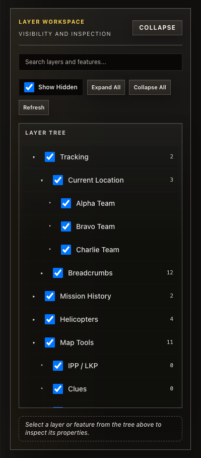
The tree groups everything on the map: Tracking (Current Location and Breadcrumbs, listed per device), Mission History, Helicopters, Map Tools (markers by type, drawings by type, measurements) and GPX Tracks.
- You can show a device's current position without its trail, the trail without the position, or both. A box with a dash means some devices are on and some are off.
- Hidden things stay saved; you just cannot click them on the map. A warning stays on screen while any current location is hidden.
- Search filters the tree. Show Hidden includes hidden items. Expand All / Collapse All and Refresh do what they say.
- Select a row to inspect it. You can give it an Alias (a display name only), move it Up / Down among its siblings, or, for a drawing, press Edit Drawing.
Markers
To place a marker, click empty ground on the map when no tool is armed (dragging only pans the map). The marker form opens with the position already filled in as WGS84, ITM and TM65 grid reference.
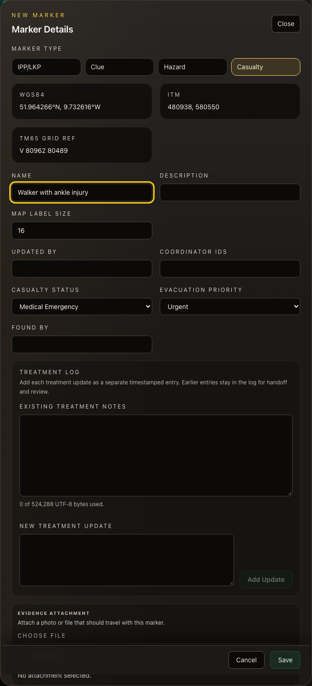
| Type | Records |
|---|---|
| IPP/LKP | Initial planning point or last known position, with subject category. |
| Clue | Clue type, confidence, found by, notes. |
| Hazard | Hazard type and severity. |
| Casualty | Name, Casualty Status (Lost, Crag Fast, Medical Emergency, Unknown, Deceased), Evacuation Priority (Normal, Urgent, Walk-Off, None, Self-Evacuation), found by, and a timestamped treatment log. |
- Casualty markers need Name, Casualty Status and Evacuation Priority before Save works. Missing ones are marked Required.
- Treatment log: type each update in New Treatment Update and press Add Update, or press Save to add the typed update and save the marker together. Each entry is timestamped and earlier ones stay in the log.
- Closing a marker with unsaved changes asks before discarding them. Choose Keep editing to continue or Discard changes to close without saving.
- Marker load or placement failures show a warning banner over the map. For a load failure, press Retry; markers on the map may be incomplete until the load succeeds.
- Map label size changes the text on the map. Casualty labels start larger, and the casualty marker is a large red star on a white disc with a dark ring, so it stands out from place names on any map.
- An evidence attachment (photo or file) can travel with the marker in the desktop app. If the app says the attachment could not be saved safely, it was not added: free some disk space and attach the file again.
- Retire asks twice (Retire, then Retire Marker; Keep cancels). A retired marker leaves the map but its history stays in the record.
- If a marker sits on top of a drawing, clicking selects the marker. To edit the drawing underneath, use the Layers panel.
- To place a marker from a grid reference instead of a click, use Marker at GR, or Create Marker Here in the coordinate converter.
Draw and measure
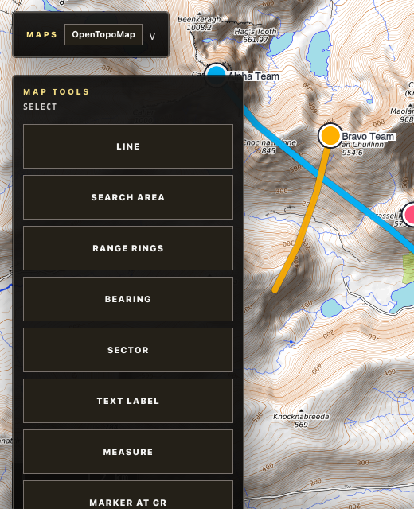
Tools need an active mission (before that the box says Mission required). Pick one tool at a time. When you save or cancel, the map returns to its normal state (no tool armed). There is no separate Select button.
| Tool | How to use it |
|---|---|
| Line | Click points. Double-click or right-click to finish. Shows distance and true/magnetic bearing. |
| Search Area | Click the corners, then right-click or double-click on the last corner to finish. A form opens (below). The tool's own hint does not say how to finish. |
| Range Rings | Click a centre. Set a custom radius, or use the LPB percentile rings. |
| Bearing | Click an origin, then enter distance and a true or magnetic bearing. |
| Sector | Click a centre, then set start and end bearings and radius. The form shows the centre as an Irish Grid reference. |
| Text Label | Click a point, type the text. Drag a placed label to move it. |
| Measure | Click two points for distance and bearing. It is one-shot: after the second click it stops. Clear Measurements asks you to confirm. |
| Marker at GR | Choose a marker type, type a TM65 grid reference such as V 80962 80489, press Create Marker. A bad reference is refused and nothing is created. |
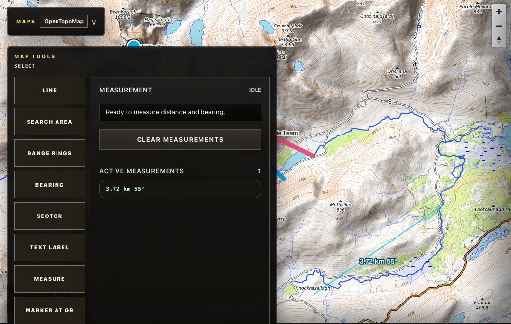
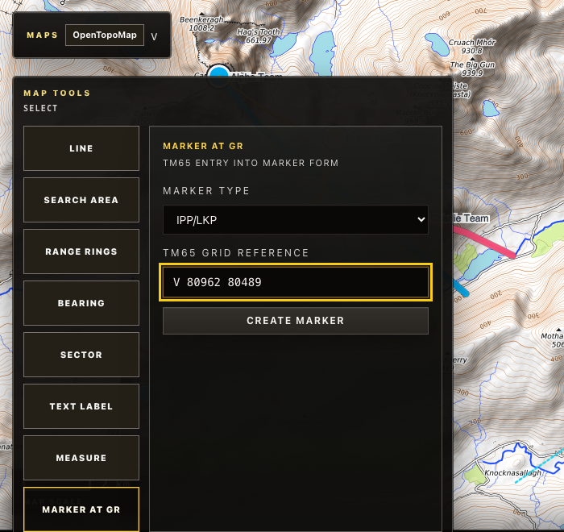
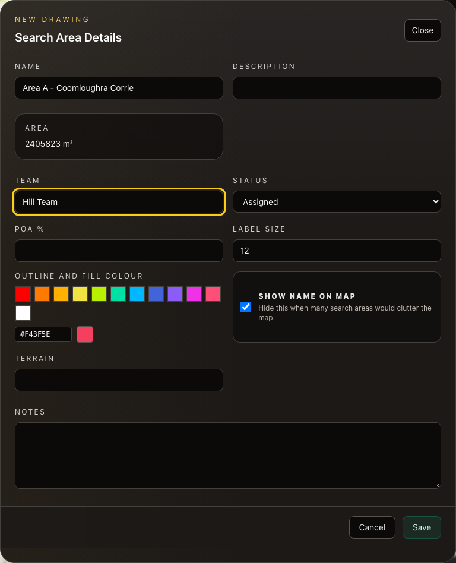
Search areas start red so they show over hills; you can pick a colour, hide the name on the map when labels crowd it, and record team, status, probability of area, terrain and notes. To correct a drawing, click it (or use the Layers panel), then edit or Retire it and confirm. Retiring removes it from the map but keeps its history.
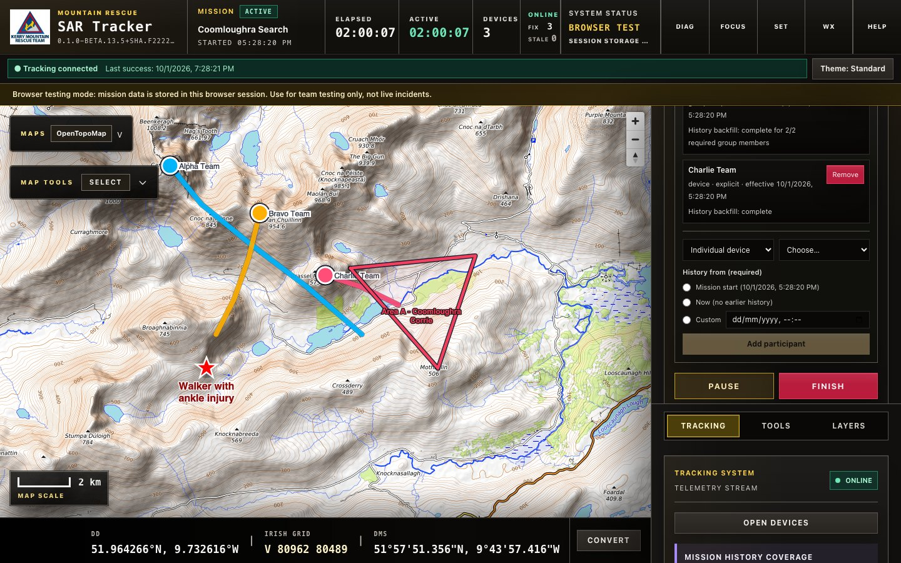
GPX tracks and helicopters
Both live in the Tools tab.
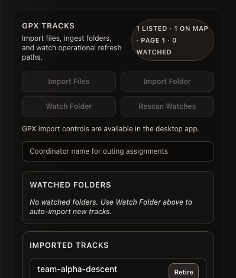
Add GPX, helicopters) with GPX Tracks controls and one imported track" />GPX tracks
- Import Files and Import Folder add tracks. Watch Folder imports new files as they appear, and Rescan Watches checks again. These need the desktop app. A watched folder is checked every 30 seconds; files that have not changed are skipped, and the list stays on the page you are reading.
- Watched folders are saved with the mission on this computer. After a restart, reopening the mission resumes them and says Resumed watching N folders saved for this mission; files dropped in while SAR Tracker was closed are imported straight away. If a watched folder cannot be opened (for example a USB drive is not connected), a red message names the folder and says new files there are not being imported: reconnect it and press Rescan Watches, or Remove it. If the saved list was damaged and was restored from its backup copy, a red message says so; check the Watched Folders list. If the saved list cannot be read or saved, a red message says so; choose the folder again with Watch Folder to retry. If the list was saved but its backup copy could not be updated, a red message says so: the folders are still watched after a restart, but check the disk and free space; the backup is retried on the next change.
- A newly imported track is shown on the map straight away. A track you hid yourself stays hidden. The panel summary says how many tracks are listed and how many are on the map, for example 5 listed · 4 on map, 1 hidden in Layers. The list shows 25 tracks per page, but the map draws every track in the mission, not only the page you are reading.
- With many tracks, each one is drawn with less detail so they all fit. If the map still cannot draw every track (more than 512, or a track with too many separate pieces), a yellow notice on the map says Map shows X of Y imported GPX tracks and names the ones left out (the notice shows two lines; hold the pointer over it to read it all, and every left-out track is marked in the GPX panel); the panel summary adds N not drawn and those rows say Not drawn on map. If the map could not be refreshed, the notice starts with GPX map not refreshed, says how many tracks it still shows from the last successful read and that newer imports may be missing; the map keeps the tracks it last drew.
- Each track's row says On map, or Hidden on map with the reason (GPX Tracks is off in Layers or this track is off in Layers) and a Show on map button. A listed track is not necessarily drawn: check this line if you cannot find a track.
- If showing a track could not be saved, the row says On map, but not saved (may be hidden after a restart) with a Save again button.
- Each imported track has its own colour. Retire takes it off the map but keeps the record; the retired track stays in the mission history and Replay.
- Bring a retired track back by importing the same file again with Import Files (or Import Folder). The same track returns, with its colour and name, and Review records that it was restored. If the file changed while it was retired, the new version is saved too. Replay still shows the track as hidden for the time it was retired.
- A watched folder never brings a retired track back: the file stays in the folder but is not imported. If it changes, SAR Tracker tells you once; use Import Files to bring the track back with the new version.
- A renamed copy of a retired file imports as a separate, new track.
- Points with no time are kept as static evidence and are not placed at an invented time.
- To link a track to an outing, type the coordinator's name in Coordinator name for outing assignments, then choose the outing on the track's row.
- If an import stops part way (for example the import stops responding), the files already imported stay, the rest are listed under import issues for review, and the message says how many were imported. For a large watched folder, which is sent in parts of 100, the import stops at the failed part and the message also says how many files were never tried; rescan or import again to try them. Finish works without restarting.
- Limits: 8 MiB per file and 100 files at a time for Import Files and Import Folder. A watched folder can hold up to 1000 GPX files; beyond that only the 1000 most recently changed are watched and a message says how many are not. Move older files to another folder. A bad file is refused with a reason and reported, never shown as a clean import. Wait for one import to finish before starting another.
- Finish and Archive are held back while a GPX import is unfinished.
Helicopters
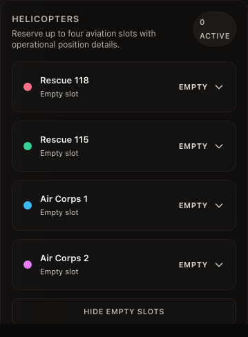
There are four slots: Rescue 118, Rescue 115, Air Corps 1, Air Corps 2. Open a slot to enter call sign, HEX ID, latitude, longitude, altitude, speed, heading and last update. It needs a call sign and a valid latitude and longitude before it saves. Slots in use always stay visible. Hide empty slots tidies the panel. Show or hide helicopters on the map in Layers.
Review and Replay
Review and replay (top bar → More) opens Review and replay: what the app has saved for a mission. Nothing in it changes the mission.
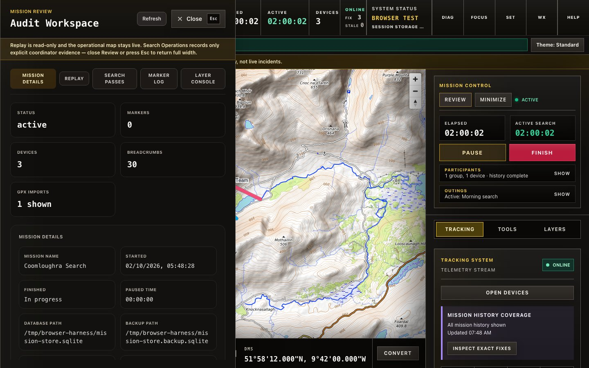
- Close it with Close or Esc to get the map back. If a marker form is open on top, the first Esc closes the form.
- With no active mission, Review opens full screen with a mission selector.
- Tabs: Mission Details (counts, dates, the audit log), Replay, Search Passes, Marker Log, Layer Console.
- The audit log hides raw position chatter by default. Tick Show every position update to see it.
Replay
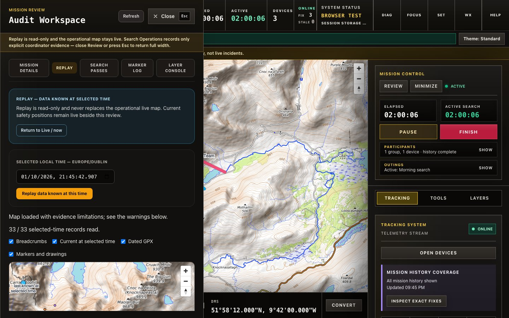
- Open the Replay tab.
- Set Selected local time (Europe/Dublin) and press Replay data known at this time.
- Read the small map: exact dated breadcrumbs, the last known position at that time, dated GPX points, and markers and drawings. Click a feature to see what it is and when.
- Tick or untick the categories to focus. This only changes the Replay map.
- Press Return to Live / now to leave.
Replay is read-only and never touches the live map. It does not replay your old zoom or panels; it shows evidence. Future times are refused. A time that does not exist (clocks going forward) is refused. In the repeated autumn hour you are asked to choose which one you mean. If something is missing or could not be drawn, Replay says so instead of showing a clean map.
The Replay map uses the map you chose in Maps. If you chose Discovery Topo and its offline package is ready, Replay shows Discovery without a network connection. If the package is missing, unreadable or changed, Replay uses OpenTopoMap and a yellow notice above the map explains why.
Search Passes
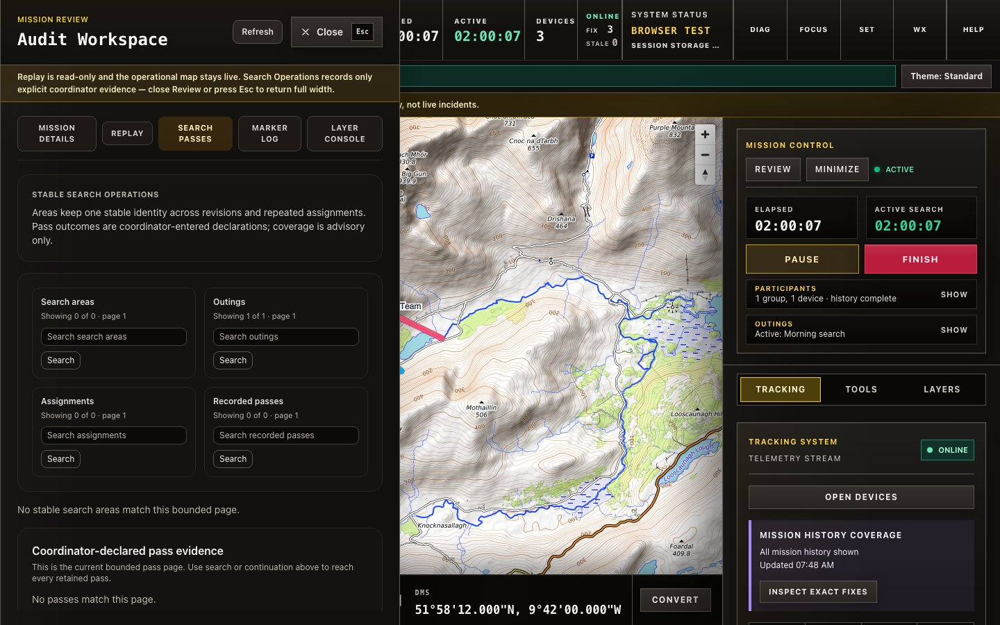
Here a coordinator records who searched which area, and how it went. Choose the coordinator, search area, outing and assignment yourself (nothing is picked for you), enter the pass start and end times (Europe/Dublin), then choose the outcome: fully searched, partially searched or aborted. The outcome is always the coordinator's declaration. Any coverage figure from breadcrumbs is advice only and never sets the outcome. A pass must sit inside its outing and cannot be in the future. Finished missions show these records but do not accept new ones. The one exception is a correction: after an audited unlock of a locked mission, or an archive restore for correction, new records may be entered until the corrected archive is finalized.
Archive and lock a finished mission
After Finish, archiving makes a single encrypted copy of the mission, checks it, and locks the mission so it cannot change. Do it at stand-down, not mid-search.
Archive & Lock
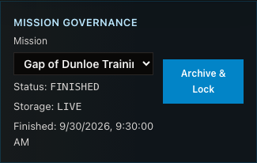
- Find Mission Governance on the new-mission screen, under Last finished mission: archive and unlock. It acts on the mission named there, which starts as the one you finished most recently. If several missions are finished, choose the right one in the Mission list and check the name before you go on.
- Press Archive & Lock.
- Type an archive passphrase twice. Use at least 14 characters with at least three of: lower case, upper case, numbers, symbols. Press Generate one-time recovery code.
- Write the code down safely. Type it back exactly in the confirmation box.
- Press Create, seal, and verify archive and wait.
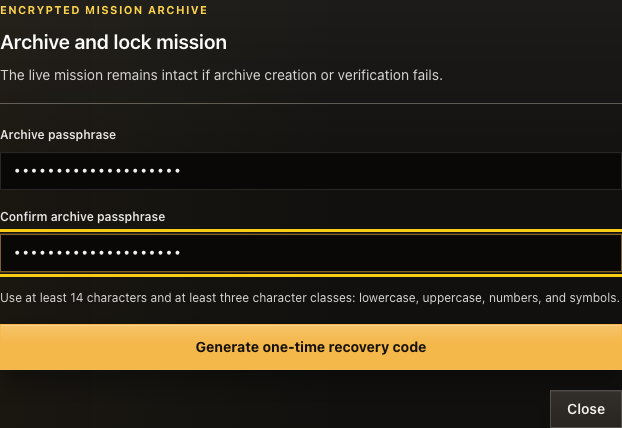
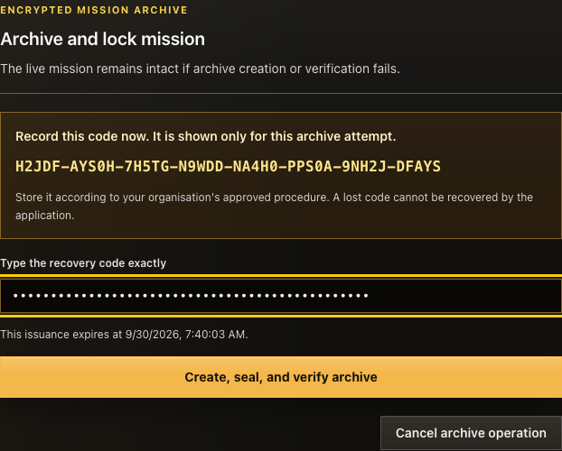
The app creates the encrypted archive, seals it (this locks the mission read-only), then restores those saved bytes into a scratch area and checks them independently. If creating or checking fails, it says so and your live data is untouched. A sealed but unverified archive stays locked and marked incomplete; retry it from Review with the original passphrase and recovery code. Do not call it archived until Review shows Verified encrypted archive.
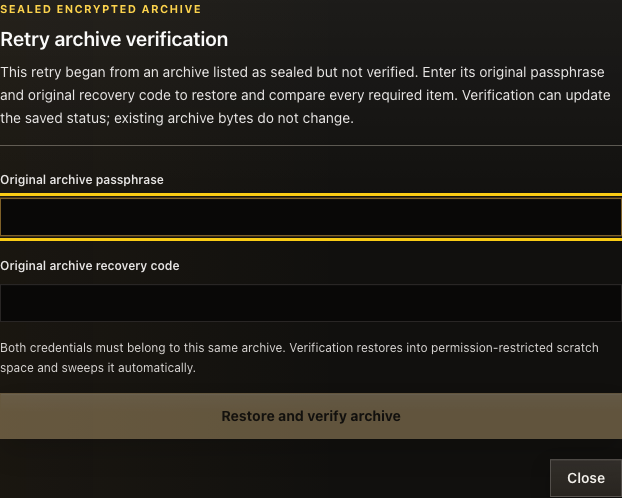
Open an archive (read-only)
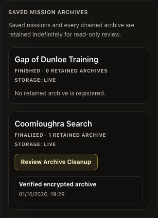
- Open Review and find the mission under Saved Mission Archives.
- Select the archive, choose Passphrase or Recovery code, enter it, and press Open Read-only Archive.
- The banner says Archived mission - read-only and shows the archive's SHA-256. Look around, use Replay.
- Press Close Archive Review when finished so the temporary copy is removed. If it warns that cleanup failed, use the retry.
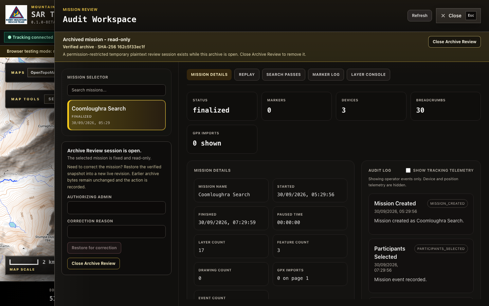
Restore for correction needs an authorizing admin and a reason. It opens a new live revision; the earlier archive is never changed. Admin Unlock on the Governance card also needs a named admin and a reason. Use both only when your coordinator tells you to. Older archives labelled Legacy unencrypted open without a passphrase, and are not upgraded.
Archive cleanup (optional)
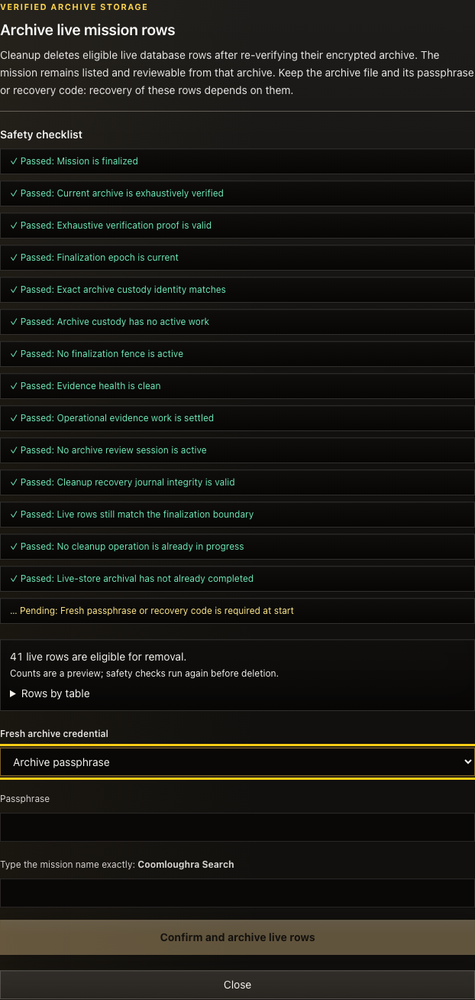
Review Archive Cleanup removes the mission's bulk rows from the working database after re-checking the verified archive. The mission stays listed and can still be opened from the archive. You must type the archive's credential again and the mission name. It frees space for reuse; it is not secure erasure. Keep the archive file and its passphrase or recovery code: recovering those rows depends on them. Do not run cleanup during operations.
If the app says evidence was lost
There are two different situations. Evidence waiting to be saved, or stored evidence that needs repair (pending or damaged records): Archive & Lock stays blocked until it is saved or the storage is repaired. An admin cannot wave this through. A known loss that can never be recovered (for example after a crash): the mission is marked so it can never claim to be Complete or 100%. To archive anyway, a named admin records the gap after Finish. If a further loss happens later, the earlier record no longer counts and Archive is blocked again until an admin records the new one.
After an unexpected close, the Tracking panel says rejected-position evidence may have been lost when the app closed unexpectedly. This appears only if the app held unsaved rejected positions when it closed. If SAR Tracker cannot tell (for example the first start after upgrading from beta 13.5 following an unexpected close), it shows the same warning for every open mission.
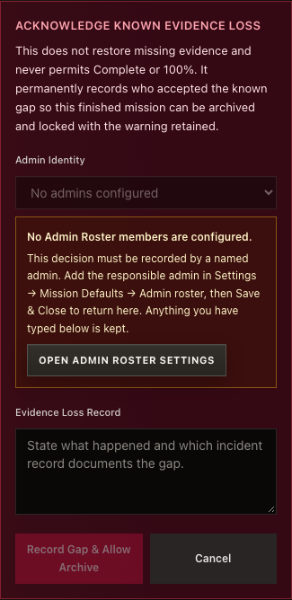
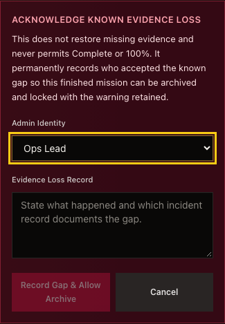
This records who accepted the gap. It does not restore evidence, and the warning stays with the mission. If the admin list is empty, add the admin in Settings → Mission defaults → Admin roster, press Save & Close, and you return to the same dialog with your typing kept.
Settings
Open Settings from the top bar. Settings is a menu of five sections on the left: Mission defaults, Tracking sources, Mapping, Weather links and Advanced. It opens on Tracking sources. Moving between sections keeps your edits; nothing is saved until you press a save button. If you close Settings with unsaved edits the app asks whether to keep editing or discard. The bar at the bottom has Test Connection, Save & Close and Save, Connect & Close.
A section with a mistake that stops saving shows a red number in the menu, and the bottom bar says Fix before saving with the section's name. Open that section to see the message under the field.
Tracking sources: team default group and Traccar
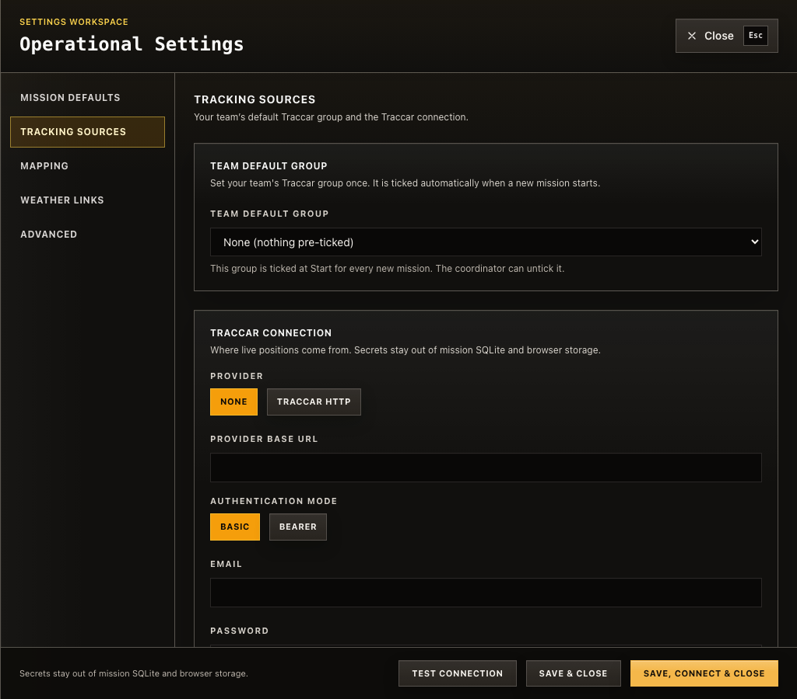
- Team default group: choose your team's own Traccar group once (for example KMRT). It is ticked automatically at Start in every new mission. See Start a mission.
- Under Traccar connection, choose provider Traccar HTTP.
- Enter the Provider base URL your admin gave you. Do not put a username or password in it; such URLs are refused.
- Choose Basic (email and password) or Bearer (token) and fill it in.
- Press Test Connection. It signs in and checks device access.
- Press Save, Connect & Close. Tracking connects and you return to the map.
The password or token is kept in the app's own local credential file (not the operating system's keyring) and is cleared from the form after saving. If tracking says no credential is available, enter it again here.
- Auto-connect on startup only decides whether tracking starts when the app opens. Saving Settings later keeps tracking that is already live.
- Auto-refresh and its interval (seconds, default 30): how often positions are fetched.
Saving can stop live tracking only if you say so. If tracking is live and your edits would switch it off (provider set to None, Auto-refresh switched off, or the stored password cleared), the app asks first and names the reason. Press Keep Editing to go back, or Stop Tracking and Save if you mean it.
If settings are saved but cannot be applied to the running app, a red Settings not applied message appears at the bottom of the screen after Settings closes. Your settings are saved. Open Devices and use Reconnect, or restart SAR Tracker, then press Dismiss.
Mission defaults
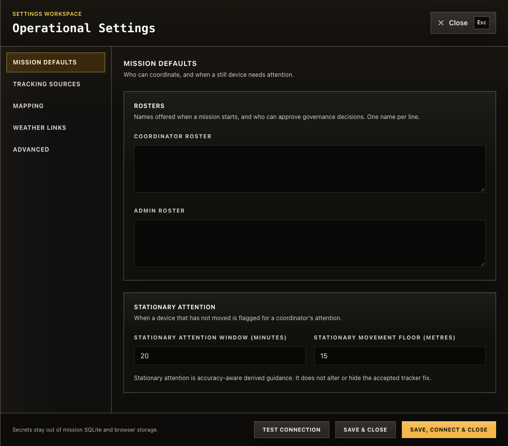
- Coordinator roster and Admin roster: names, one per line (commas also work). Coordinators are the people named in your records. Admins can record evidence gaps and unlock missions. These are lists of names for the record; they are not passwords, so treat Settings as trusted-computer access.
- Stationary attention window (minutes) and movement floor (metres): defaults 20 and 15. Change them only on purpose.
Mapping
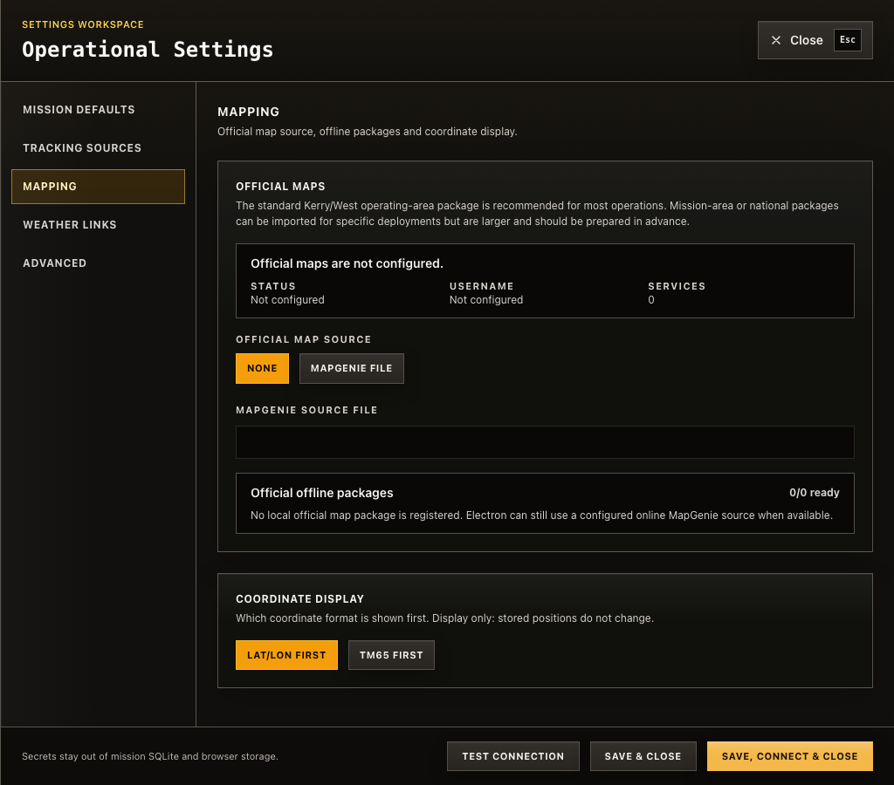
- Official maps: see Official and offline maps.
- Coordinate display: Lat/Lon first or TM65 first. Display only; stored positions do not change.
Weather links
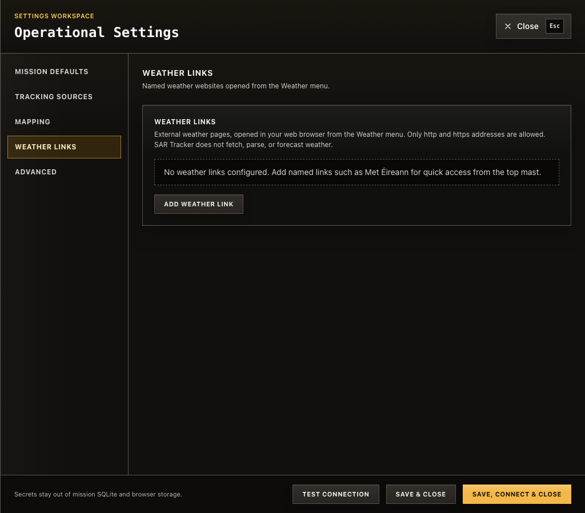
Press Add Weather Link for a named link such as Met Éireann, with an http or
https address. It appears in the Weather menu in the top bar and opens in your
normal web browser. The desktop app opens only addresses on the websites saved here, and Settings will not save an address that contains a user name or password. If a link cannot be
opened, the Weather menu stays open and says why. SAR Tracker does not fetch or forecast weather itself.
Advanced
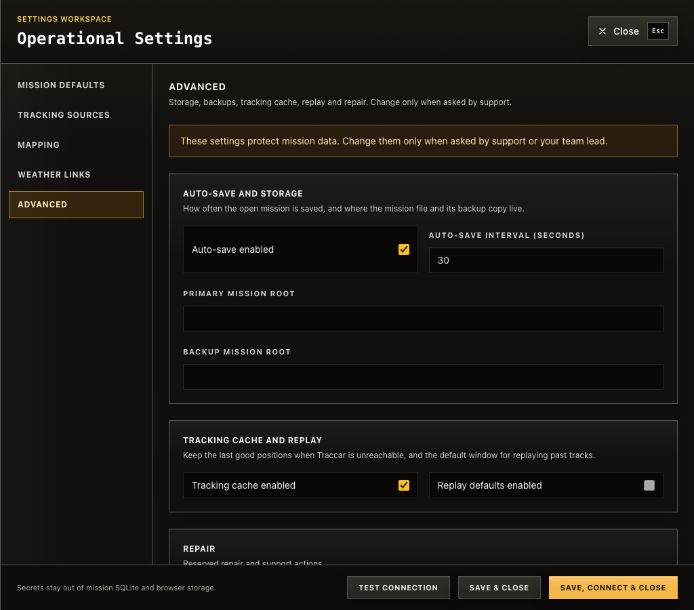
- Auto-save and its interval (seconds, default 30).
- Primary and Backup mission root: where mission files are kept. Leave blank unless an admin tells you otherwise.
- Tracking cache: keeps the last good positions when Traccar cannot be reached.
- Replay defaults and the reserved Repair Layer Structure action.
When something looks wrong: Diagnostics and support
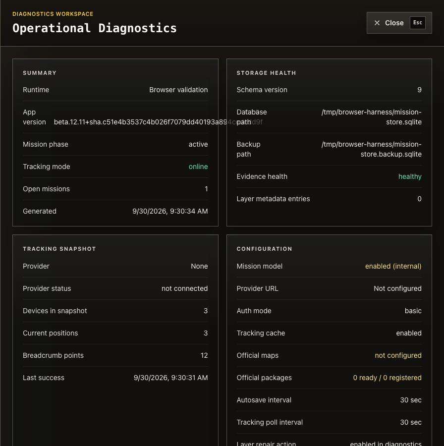
Open Diagnostics in the top bar. It shows runtime and app version, mission phase, storage health (including Evidence health), the tracking snapshot and the current configuration. Diagnostics never shows passwords or tokens, and never shows the paths of map packages.
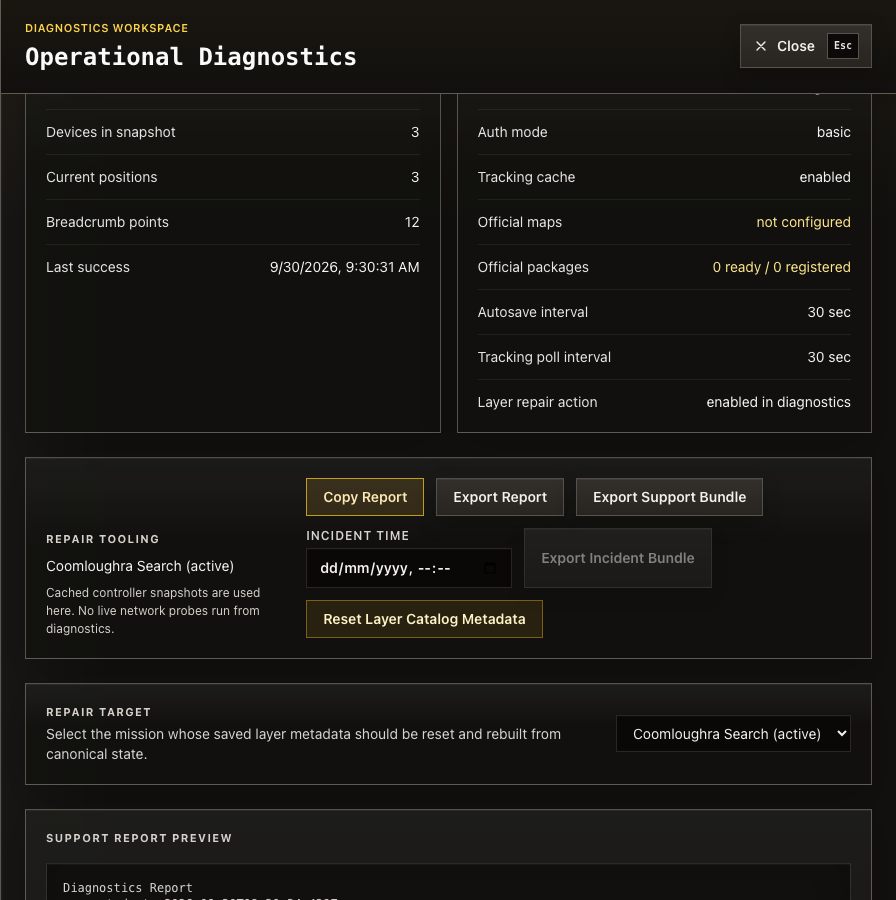
- Take a screenshot of what you see, if you can.
- Note the time it happened.
- In Diagnostics, enter that time in Incident time and press Export Incident Bundle (it covers 30 minutes either side). For a general problem press Export Support Bundle.
- Before you send or copy any report, bundle, screenshot or video, a person must look through it first, even within the team. Always remove passwords, tokens and any other secret. Also remove exact locations, casualty details, private-map details, folder paths and computer names unless they are essential to the problem. If you cannot check it safely, keep it where it is and do not share it. Then send it with a few words on what you were doing.
- Copy Report and Export Report give the readable report shown at the bottom of the page. Every report and bundle starts with the SAR Tracker version. A very long report is cut at about 1 MB and says so at the end.
- If the app closed unexpectedly last time, an amber notice at the top of Diagnostics offers a direct Export Support Bundle button. It never blocks an active mission.
- Bundles are saved on this computer only. Nothing is sent anywhere automatically. In the browser test copy the bundle holds only a basic environment snapshot.
- A small amber Autosave warning in the top bar means the automatic backup is stale or failed. Keep the app open and export a bundle. A backup that fails around Start, Pause, Resume, Finish, Archive or Unlock shows a persistent alert below the top bar; do not treat the backup as current until it clears. Disk nearly full means the backup paused itself so live tracking keeps room to save; free disk space on the laptop and it resumes on its own. Mission backup refused … integrity check means the new copy was damaged, so the last good backup was kept: keep the app open and tell your technical lead.
If SAR Tracker freezes (Linux)
If the clock still moves but clicks and keys do nothing, leave the app open. Do not restart, reinstall or force-close it. In a terminal run the report-only collector:
sh "/opt/SAR Tracker Electron Validation/resources/field-tools/sartracker-linux-hang-collector.sh" --screenshot
For a running AppImage, find it with
find /tmp -maxdepth 4 -path '*/resources/field-tools/sartracker-linux-hang-collector.sh' -print -quit
and run it with sh and --screenshot. It reads process and graphics state and does not attach
to the app or copy mission data. Review the optional screenshot before sharing it (it may show the
map), then send the .tar.gz with the time and what you tried.
If the map does not appear
| You see | What to do |
|---|---|
| Map area says The map cannot be shown: this computer's graphics (WebGL) are unavailable or blocked | The rest of the app still works. Click Restart with software rendering. SAR Tracker saves your mission, restarts, and draws the map in software (it may be slower). It remembers this choice for later starts. If the message still appears after the restart, export a support bundle and contact support. |
| Map area says The map stopped working | Tracking, devices and mission records still work. Restart SAR Tracker. If it happens again, export a support bundle and contact support. |
If it will not start
- A separate startup fault window means a safety check failed before the mission screen opened. Read it, close it, and do not edit or delete the profile. Ask the maintainer.
- SAR Tracker could not restart safely or could not close safely: leave the app as it is, keep the profile untouched and contact the maintainer rather than forcing it closed.
- SAR Tracker is finishing a backup or SAR Tracker is still closing after you close it: a backup copy or background task was still running. Mission data already recorded is safe. Press OK and wait; SAR Tracker closes by itself when the work finishes. Do not start it again until it has closed (starting it just repeats the message). If it is still running after 10 minutes, restart the computer; the mission reopens normally.
- A database made by a newer version is refused with SAR Tracker could not start. Install a matching build; do not downgrade the profile in place.
- If SAR Tracker cannot write to its data folder (for example the folder belongs to another user, was copied with the wrong owner, or the disk is full), it shows a SAR Tracker could not start window naming the folder and what to check, then closes. Nothing in the folder is changed. Fix the permission or free space, then start the app again.
- If the window says the map screen did not start, the installed copy is probably damaged or incomplete. No mission-data damage was confirmed. Reinstall SAR Tracker from the team's release and start it again; if it still fails, keep the data folder as it is and contact support.
- If the window says SAR Tracker could not show its mission screen, copy or screenshot the message, then press Reload clean runtime. No mission-data damage was confirmed. If it happens again, restart SAR Tracker and contact support.
- If the top bar says Re-enter settings and Settings opens with a Saved settings could not be read notice, the settings file was damaged (often after a power cut). SAR Tracker kept the damaged file aside (named
settings.json.corrupt-…in the data folder) and started with default settings, so tracking is off. Open Settings, enter the Traccar server, user and password again, check the rosters and maps, and press Save, Connect & Close. Do not delete the kept file; the maintainer may need it. - Only one SAR Tracker runs at a time. If you see two windows, close the extra one.
- Log files: Linux
~/.config/sartracker-web/logs/andcrashes/; macOS~/Library/Application Support/sartracker-web/; Windows%APPDATA%\sartracker-web\.
Team beta notes
Install a desktop beta
- Use only a beta that has a release note (under
docs/releases/in the project). If the maintainer has not pointed you to one, ask before opening the app. - Every beta ships with a
SHA256SUMSfile. Check your download against it before running it. - Linux (the current CI beta): an
.AppImage(portable) and a.deb(system install), both x86_64. AppImage:sha256sum -c SHA256SUMS --ignore-missing, thenchmod +xthe file and run it. If you seelibfuse.so.2errors, installlibfuse2t64(Ubuntu 24.04 / Debian 13) orlibfuse2(Ubuntu 22.04 / Debian 12). The.deb:sudo apt install ./<file>.deb. - Windows: an unsigned installer, only if the maintainer says a Windows build exists for that beta. Windows shows a "Windows protected your PC" warning: More info → Run anyway. Managed machines that block it cannot be worked around; use another computer.
- macOS: built locally and supplied by the maintainer. If Gatekeeper refuses it, try right-click → Open first. Only if the maintainer asks, remove quarantine with
xattr -dr com.apple.quarantine /Applications/sartracker-web.app. Never do that for an app from an untrusted source.
The hosted test copy
- It is at https://sartracker-web.vercel.app/?missionHarness=1 and is for training and quick surface checks only. It keeps mission data in the browser session, has no official maps, and cannot use file pickers or restart recovery. Never use it for a real incident.
- Confirm the amber Browser testing mode banner under the top bar, which says mission data is stored in this browser session.
- In Settings → Tracking sources use the team's https Traccar address (from your admin), Basic login, Test Connection, then Save, Connect & Close. A plain
http://address is blocked from this page. After a full page reload, enter the password again. - If breadcrumb history looks empty, restart the mission with a 24 or 48 hour roll back time and tick the teams before Start.
- When you report something, include the URL, mission name, browser, what you expected and what happened, and a screenshot if you can. The checklist is
docs/team-testing-feedback-loop.md.
Using a beta beside your normal process (shadow use)
In shadow use the team's existing process stays in charge of positions, tasking and records. SAR Tracker is a second opinion. Before a field session, the release note must name the exact build, the existing process, the person running it, and a rehearsed switch back to that process that takes no more than 60 seconds. If any of that is missing, do not run a shadow session.
Record good exercises as well as faults. Ordinary wording or layout feedback needs a short note and, if you like, a cropped, redacted screenshot. Never share a raw mission database, a whole profile, a precise location, a credential, a private map, or an unchecked screenshot as routine feedback.
Known issues and limits
This list is kept honest on purpose. It is safer to know what is not finished than to assume it.
Things that can catch you out
- Public fallback maps do not work offline in the desktop app. Only an imported official map does.
- Paused means no live refresh. The map does not update until you Resume.
- Field ready covers only the view and zoom you checked.
- W3W (what3words) conversion is not available.
Limits of this beta
- Coordinator and admin rosters are lists of names for the record. They are not logins, so anyone who can open Settings can change them. Treat Settings as trusted-computer access.
- Replay reconstructs what was known at a time. It does not reproduce your old screen layout or zoom.
- Archive encryption protects the archive file, not the live database, and archive steps use temporary readable copies (see Archive and lock).
- Only Linux desktop betas are produced by the release pipeline. Windows and macOS builds are supplied separately, and signing and notarizing are still open work.
- The hosted test copy keeps data in the browser session only and caps very large histories.
- This manual was checked in a browser test copy with made-up data. It did not run: the official map file pickers, GPX file pickers, marker file attachments, real archive encryption on disk, support and incident bundle export, the Linux freeze collector, startup faults, or live Traccar. Those descriptions come from the app's own labels, code and earlier verified releases. If one of them differs on your desktop, tell the maintainer.
Maintaining this manual
Change this file whenever anything a volunteer can see changes. Describe what the app does today, not what is planned. Put anything unfinished under Known issues.
All the screenshots are made by one script from synthetic data (made-up teams, made-up archive passphrase, the Reeks area of Kerry as a backdrop). To rebuild every image at 1440x900:
MANUAL_CAPTURE=1 npx playwright test tests/e2e/manual/capture-manual.spec.ts --project=chromium --workers=1
It takes about two minutes and writes to public/manual/assets/. Look at every image before
you commit: a few close-ups are taken in a taller (1440x1500) window because the right-hand panels
scroll. Then read the manual against the running app, section by section.